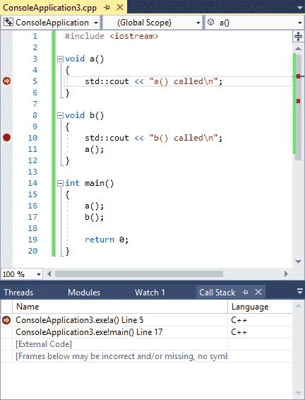
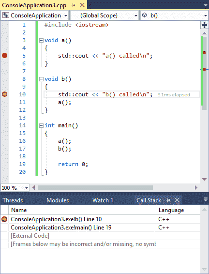
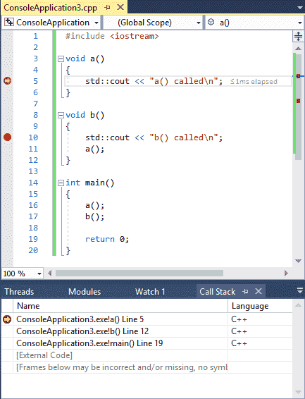

3.9 — Utiliser un débogueur intégré : la pile d'appels
Les débogueurs modernes contiennent une fenêtre d'information supplémentaire très utile pour déboguer votre programme : la fenêtre de la pile d'appels.
Lorsque votre programme appelle une fonction, vous savez déjà qu'il mémorise l'emplacement courant, effectue l'appel de fonction, puis revient à cet emplacement. Comment sait-il où revenir ? La réponse est qu'il en garde la trace dans la pile d'appels.
La pile d'appels (call stack) est la liste de toutes les fonctions actives qui ont été appelées pour arriver au point d'exécution courant. La pile d'appels contient une entrée pour chaque fonction appelée, ainsi que la ligne de code vers laquelle le programme reviendra lorsque la fonction se termine. Chaque fois qu'une nouvelle fonction est appelée, cette fonction est ajoutée au sommet de la pile d'appels. Lorsque la fonction courante rend la main à l'appelant, elle est retirée du sommet de la pile d'appels, et le contrôle revient à la fonction placée juste en dessous.
La fenêtre de la pile d'appels (call stack window) est une fenêtre du débogueur qui affiche la pile d'appels courante. Si vous ne voyez pas la fenêtre de la pile d'appels, vous devrez demander à l'environnement de développement de l'afficher.
Pour les utilisateurs de Visual Studio
Dans Visual Studio, la fenêtre de la pile d'appels se trouve via menu Déboguer > Fenêtres > Pile des appels. Notez que vous devez être en session de débogage pour activer cette fenêtre.
Pour les utilisateurs de Code::Blocks
Dans Code::Blocks, la fenêtre de la pile d'appels se trouve via menu Debug > Debugging windows > Call stack.
Pour les utilisateurs de VS Code
Dans VS Code, la fenêtre de la pile d'appels apparaît en mode débogage, ancrée à gauche.
Examinons la pile d'appels à l'aide d'un programme d'exemple :
#include <iostream>
void a()
{
std::cout << "a() called\n";
}
void b()
{
std::cout << "b() called\n";
a();
}
int main()
{
a();
b();
return 0;
}
Placez des points d'arrêt aux lignes 5 et 10 de ce programme, puis démarrez le mode débogage. Comme la fonction a est appelée en premier, le point d'arrêt de la ligne 5 sera atteint en premier.
À ce stade, vous devriez voir quelque chose de semblable à ceci :

Votre environnement de développement peut présenter quelques différences :
- Le format des noms de fonctions et des numéros de ligne peut être différent
- Vos numéros de ligne peuvent être légèrement décalés (d'une unité)
- Au lieu de [External Code], vous pouvez voir une série d'autres fonctions aux noms bizarres.
Ces différences n'ont aucune importance.
Ce qui compte ici, ce sont les deux premières lignes. De bas en haut, nous voyons que la fonction main a été appelée en premier, puis que la fonction a a été appelée ensuite.
La ligne 5 à côté de la fonction a indique le point d'exécution courant (qui correspond au marqueur d'exécution dans la fenêtre de code). La ligne 17 de la deuxième ligne indique la ligne vers laquelle le programme reviendra lorsque le contrôle retournera à la fonction main.
Astuce
Les numéros de ligne qui suivent les noms de fonctions indiquent la prochaine ligne à exécuter dans chaque fonction.
Comme l'entrée du haut de la pile d'appels représente la fonction en cours d'exécution, le numéro de ligne indiqué ici est la prochaine ligne qui sera exécutée lorsque l'exécution reprendra. Les autres entrées de la pile d'appels représentent des fonctions vers lesquelles le programme reviendra à un moment donné, donc le numéro de ligne de ces entrées correspond à la prochaine instruction qui sera exécutée après le retour dans cette fonction.
Choisissez maintenant la commande de débogage continuer pour faire avancer l'exécution jusqu'au point d'arrêt suivant, qui se trouve à la ligne 10. La pile d'appels devrait se mettre à jour pour refléter la nouvelle situation :

Vous remarquerez que la fonction b est maintenant la ligne du haut de la pile d'appels, ce qui reflète le fait que la fonction b est celle qui est activement exécutée. Notez que la fonction a n'apparaît plus dans la pile d'appels. En effet, la fonction a a été retirée de la pile d'appels lorsqu'elle s'est terminée.
Choisissez encore une fois la commande de débogage continuer, et nous atteindrons de nouveau le point d'arrêt de la ligne 5 (car la fonction b appelle la fonction a). La pile d'appels ressemblera à ceci :

Il y a maintenant trois fonctions dans la pile d'appels : (de bas en haut) main, qui a appelé la fonction b, laquelle a appelé la fonction a.
La pile d'appels est utile en association avec les points d'arrêt : lorsqu'un point d'arrêt est atteint et que vous voulez savoir quelles fonctions ont été appelées pour arriver à cet endroit précis du code.
Conclusion
Félicitations, vous connaissez maintenant les bases de l'utilisation d'un débogueur intégré ! Grâce au pas à pas, aux points d'arrêt, aux espions et à la fenêtre de la pile d'appels, vous disposez désormais des fondamentaux pour déboguer presque n'importe quel problème. Comme pour beaucoup de choses, devenir efficace avec un débogueur demande de la pratique et des essais successifs. Mais nous le répétons : le temps consacré à apprendre à utiliser efficacement un débogueur intégré vous sera rendu plusieurs fois en temps gagné lors du débogage de vos programmes !
Source originale : https://www.learncpp.com/cpp-tutorial/using-an-integrated-debugger-the-call-stack/